Research Hub/The season on YouTube so far: 106 days/All five leagues
YouTube Football Tracker · Five leagues 2026/27
Europe's five big leagues on YouTube, the first 106 days of the season
The five big European leagues on YouTube side by side, who is biggest, who earns most per video, which length of Short and of long-form video travels furthest, and what the quietest channels in Europe have in common, read chart by chart from the first 106 days of the season.
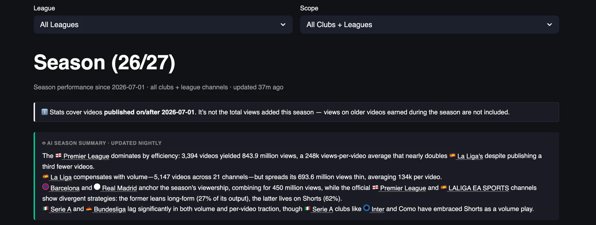
The Premier League is the biggest football league on YouTube by a distance, with 1.1 billion views from 4,287 videos since 1 July across its 20 club channels and the league channel, 38% of the 2.86 billion views the 101 channels in the five big leagues have collected between them, and it got there with the fewest videos among the big three, because La Liga published 6,626 videos for 920 million views and the Premier League earned 258.4 thousand views per upload against 139.4 thousand in Spain. Serie A published about as many videos as the Premier League, 4,334, and collected 308.6 million views, so an English upload is worth three and a half times an Italian one before anyone has decided what to put in it.

Shorts carry every league. They are between 48% and 57% of what the channels publish and they bring in 59% of the views in England, 62% in Spain, 63% in Germany, 59% in Italy and 75% in France, and the per-video gap between the two formats widens as the league gets smaller, from Shorts earning 8% more than long-form in the Premier League to double in Ligue 1. The Bundesliga is the second most efficient league at 105.9 thousand views per video, ahead of Ligue 1 at 76.8 thousand and Serie A at 71.9 thousand, which puts Italy last on return per upload with the second highest output of the five.
Two things in this dashboard surprised me. The first is that the shortest Shorts earn the most, with clips under 13 seconds averaging two and a half to three times the views of the 13 to 18 second Shorts that clubs make most of, and the second is that the same holds for long-form, where clips of one to three minutes earn more per video than anything longer, and the five to ten minute video, the second most common shape in the catalogue, earns the least. The nightly summary at the top of the page points at some of this and gets the totals wrong, so this piece works from the tables, one chart at a time, and the five league pages that follow it go club by club.
Scope: videos published on or after 1 July 2026 on 101 club and league channels across the Premier League, La Liga, Bundesliga, Serie A and Ligue 1, 21,001 videos over 106 days, snapshot of 15 October 2026. Views on older videos earned during the season are not counted.
YouTube Football Tracker
See what everyone else is doing, and what works
The YouTube Football Tracker follows more than 100 club and league channels across the top five European leagues, plus the road to the World Cup 2026, with daily recaps, season trends and all-time leaderboards, updated every night. If you run YouTube for a club or a league, it is the quickest way to see what your rivals publish, when and in which format, and which of their videos actually travel, so you can learn from them before you plan your own. If you are a sports journalist, it shows you which stories, clubs and formats work on YouTube this week, with the numbers to back the piece. Open the tracker and start with your own league, and if you want a deeper read for your club or your newsroom, message me on LinkedIn.
Explore the YouTube Football TrackerYou can find me on LinkedIn, read my LinkedIn newsletter or find me on Substack.
01Season totals for the five leagues and the split between formats
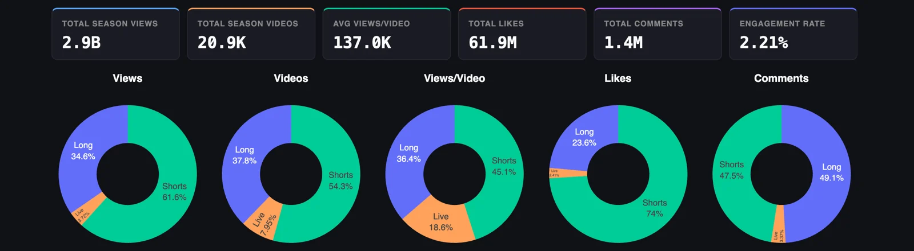
Since 1 July the 101 channels have published 21,001 videos and collected 2.86 billion views, 61.9 million likes and 1.4 million comments, which works out at 137.0 thousand views per video and an engagement rate of 2.21%, and that is roughly 198 new football videos a day from the top five leagues alone, before national teams, broadcasters and creators are counted.
The donuts say the same thing in every league. Shorts are 54.3% of what gets published and they take 61.6% of the views and 74% of the likes, and long-form, at 37.8% of output, takes 34.6% of the views and 49.1% of the comments, so people tap a heart on a Short and write something under a long video wherever the club plays. Live is 7.95% of uploads and 3.72% of views, and in the views-per-video donut it takes 18.6%, because a few hundred streams from Barcelona, Bayern and Real Madrid pull big numbers and the other thousand or so are watched by almost nobody, which is the pattern the Bundesliga page shows in detail.
02The league-by-league table
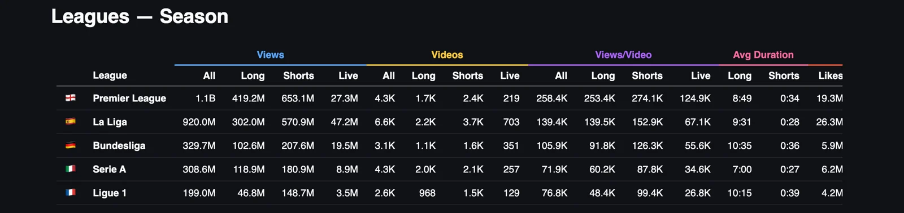
The Premier League leads with 1.1 billion views from 4,287 videos, 653.1 million of them from 2,400 Shorts and 419.2 million from 1,700 long-form videos, and La Liga is second with 920.0 million views from 6,626 videos, the biggest output of the five by a wide margin, with 570.9 million from Shorts and 47.2 million from 703 live streams, double the live count of any other league. Together the two take 71% of all the views in the dashboard, and the Bundesliga, Serie A and Ligue 1 share the remaining 29%, at 329.7 million, 308.6 million and 199.0 million.
Views per video is the column that reorders the leagues. The Premier League earns 258.4 thousand per upload, La Liga 139.4 thousand, the Bundesliga 105.9 thousand, Ligue 1 76.8 thousand and Serie A 71.9 thousand, so the Bundesliga gets more out of each of its 3,140 videos than Serie A gets out of 4,334, and Ligue 1, with the fewest views of the five, still beats Italy on return per video. In the Premier League the two formats are close, 253.4 thousand for long-form and 274.1 thousand for Shorts, in La Liga the same, 139.5 thousand against 152.9 thousand, and from there the gap opens, to 91.8 against 126.3 thousand in Germany, 60.2 against 87.8 thousand in Italy and 48.4 against 99.4 thousand in France, where a Short is worth twice a long video.
The duration columns run the other way from what the distribution charts further down would suggest. Serie A makes the shortest long-form videos, 7:00 on average, and the shortest Shorts, 27 seconds, and sits last on return per video, while the Bundesliga makes the longest long-form at 10:35 and Ligue 1 the longest Shorts at 39 seconds, and both earn more per upload than Italy. Length moves a channel within the band its audience sets, and the band is set by who follows the clubs, which is the thing none of these columns can show.
03Engagement rate and average duration by league
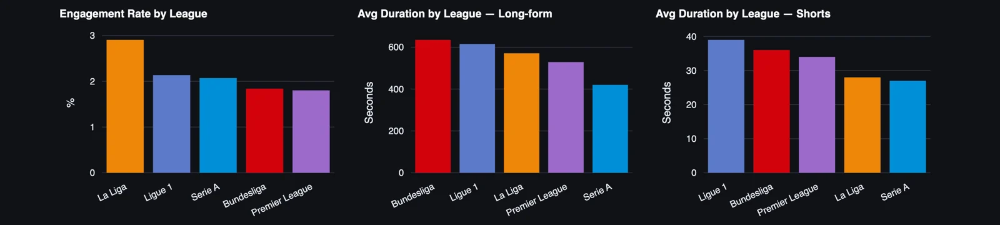
La Liga leads on engagement at 2.91%, with Ligue 1 at 2.14% and Serie A at 2.07% behind it, and the two leagues with the biggest reach per video sit at the bottom, the Bundesliga at 1.84% and the Premier League at 1.80%. My reading is the one from the Serie A page, that big Shorts reach brings in viewers who scroll past without reacting, and across five leagues the pattern holds, because the league whose average upload gets 258.4 thousand views is the league where the smallest share of those viewers does anything about it.
On duration the Bundesliga makes the longest long-form videos at 10:35, then Ligue 1 at 10:15, La Liga at 9:31, the Premier League at 8:49 and Serie A at 7:00, and the Shorts order is close to the same, Ligue 1 at 39 seconds, the Bundesliga at 36, the Premier League at 34, La Liga at 28 and Serie A at 27. Italy makes the shortest videos in both formats and Germany and France the longest, so the two leagues with the most spare time in each video are also two of the three with the least reach, which is worth reading next to the two distribution charts that come next.
04Which length of Short earns the most views
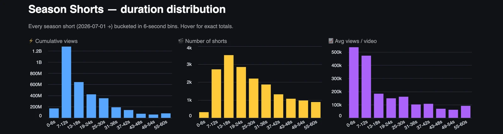
These two distribution charts count more videos than the leagues table above, roughly double, so they read as the whole set of channels the tracker follows rather than the five leagues alone, and the shares and averages are what matter here. The most common Short is 13 to 18 seconds long, with about 3,500 of them in the window, followed by the 19 to 24 second bin at about 2,800 and the 7 to 12 second bin at about 2,700, and the catalogue thins out steadily from there to under a thousand Shorts in each of the bins above 43 seconds. The views do not follow the volume. The 7 to 12 second bin alone takes close to 40% of all the Shorts views in the chart, twice the share of the 13 to 18 second bin, and the two bins under 13 seconds together hold around 43% of the views from about 17% of the Shorts.
Average views per Short makes the point without the arithmetic. A Short of six seconds or less averages about 535 thousand views, a 7 to 12 second Short about 470 thousand, and the 13 to 18 second Short that clubs make most of averages about 180 thousand, so the step from 12 to 13 seconds costs more than half the audience, and everything from 31 seconds up sits around 100 thousand or below. The 0 to 6 second bin has only about 300 videos in it, most of them from PSG and the Premier League channel, so part of that average is who made them, and the 7 to 12 second bin, with 2,700 videos from dozens of channels, is the better evidence.
If I ran a club channel I would take one thing from this chart, which is that the Short is a single moment and the clubs that have understood it, PSG with an eight-second clip at 44.1 million views and Juventus with a twelve-second backheel montage at 2.0 million, cut the moment and stop. The 25 to 30 second Short, which averages about 158 thousand, slightly more than the bins either side of it, reads like the natural length of a highlight with a build-up and a celebration, and it earns a third of what the same channel would get from the goal alone.
05Which length of long-form video earns the most views
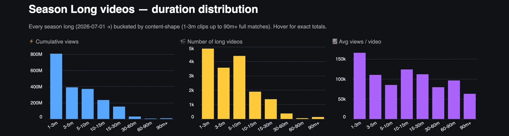
Long-form on these channels is mostly short. About 4,900 videos in the window are between one and three minutes, 3,550 are three to five minutes and 4,350 are five to ten minutes, so around three quarters of everything in the long-form slot is under ten minutes, and the full match, the 90-minute-plus bin, has about 100 videos in it. The one to three minute clip takes roughly 40% of all the long-form views in the chart, about twice the share of the three to five minute bin and of the five to ten minute bin.
Per video the shape of the curve is the surprise. The one to three minute clip averages about 165 thousand views, the ten to fifteen minute video about 124 thousand, the fifteen to thirty minute video about 112 thousand and the three to five minute video about 110 thousand, and the five to ten minute video, the second most common shape in the catalogue, averages about 85 thousand, the lowest of any bin under an hour. A full match of 90 minutes or more averages about 63 thousand, which for a stream of a whole game on a club channel is a respectable number from a small sample.
The reading I would give a club is that the catalogue has two kinds of long-form that work, the match clip under three minutes, which is a highlight package or a goal with context and travels like a Short with a landscape frame, and the proper programme of ten minutes and up, a documentary, a full press conference, a behind-the-scenes day, which people choose to sit through. The five to ten minute video falls between the two, too long for the feed and too short to be an appointment, and it is the shape most clubs default to for a match recap. The Premier League page shows Manchester City averaging 745.2 thousand views on long-form that runs 14:25 on average, and the Bundesliga page shows Schalke at 29:08, so the clubs getting the most out of the format are already on the long side of this chart.
06Publishing cadence month by month, by league
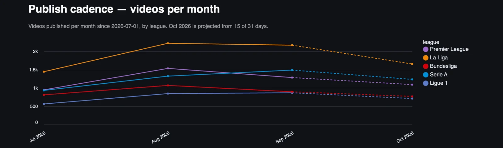
La Liga publishes more than any other league in every month, from about 1,450 videos in July to about 2,200 in August and 2,150 in September, and the gap to the next league is around 700 videos a month. The Premier League peaked in August at about 1,550 and fell to about 1,250 in September, Serie A grew through the three months, from about 920 to 1,310 and then 1,480, so Italy overtook England in September, and the Bundesliga and Ligue 1 run in a band between 550 and 1,050 videos a month.
October is projected lower for all five leagues, which is the international break in the first half of the month, and the projection is built on 15 of 31 days, so treat it as a direction. The useful comparison is Spain against England, because La Liga publishes half as many videos again and collects 84% of the views, which says the Premier League's lead is built on what each video earns and the Spanish one on how many there are.
07Videos published per day across the five leagues
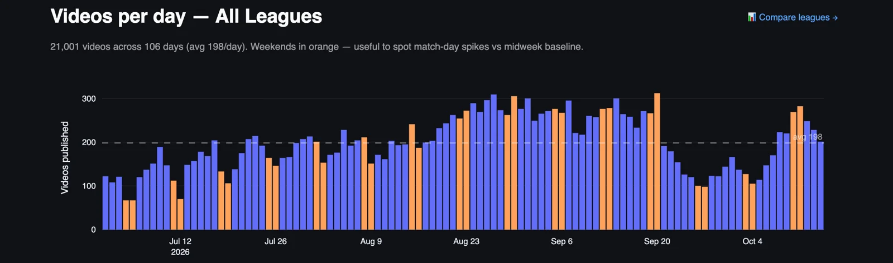
Early July runs at 100 to 150 videos a day, with a couple of weekend days near 65, and the count climbs through August to a stretch from the last week of August to the middle of September where most days are between 260 and 310, the busiest period of the season so far. The dip at the end of September and the start of October, to between 100 and 130 a day, is the October international break, and the weekend of 10 and 11 October, with the clubs back in training, bounced to about 270 and 285.
Weekends are not the busiest days. The highest single day in the window is a Saturday around 20 September at about 310, but most of the days above 280 are weekdays, because signings, press conferences and training content land Monday to Friday and the match itself is only one of the week's uploads. For a club social team the number to keep in mind is 198, which is how many other videos from the top five leagues an upload competes with on an average day, and on a busy September weekday it is more than 300.
08When the five leagues publish, by day and hour
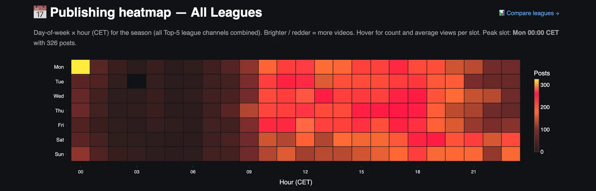
The busiest hour of the week is midnight on Monday morning, 00:00 CET, with 326 videos in the window, and it stands alone, because the next busiest cells, Tuesday and Wednesday around noon and the late afternoons from Wednesday to Friday, are in the 200 to 260 range by the colour scale. The Monday midnight cell is Sunday night's content, the late kick-offs in Spain, Italy and France ending after 22:30 and the highlights and reaction going up as soon as the edit is done, and the Ligue 1 page traces about half of it to PSG and the French league channel.
The working day from 09:00 to 22:00 on weekdays is where almost everything else happens, with the mornings before 09:00 and the hours after 23:00 close to empty on every day. Weekend afternoons are lighter than weekday afternoons, which repeats the lesson of the previous chart, that match day is one day among seven, and the quiet slots, Sunday morning, Saturday morning, any weekday before 09:00, are open to a club with a smaller audience that wants its upload to be the only new thing in the feed for an hour.
09How concentrated the views are in each league
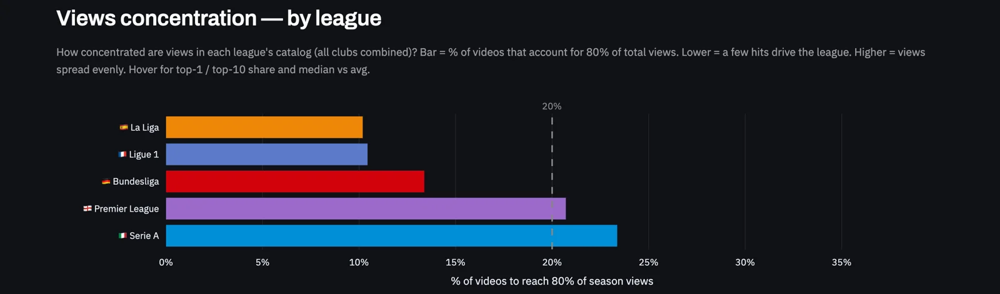
La Liga and Ligue 1 are the most concentrated leagues, with about 10% of their videos producing 80% of their views, the Bundesliga is at about 13%, and the Premier League and Serie A are the most evenly spread, at about 21% and 23%. In Spain and France that is one or two channels doing the work, Barcelona and Real Madrid with 58% of La Liga's views between them and PSG with 70% of Ligue 1's, so a tenth of the catalogue is mostly the output of the giants, and the other 19 or 18 channels fill the long tail.
Serie A as the most evenly spread league of the five reads well until the table above puts it last on views per video, because an even spread of a small number is still a small number, and the Premier League manages a similar spread with three and a half times the views. The chart is more useful per channel than per league, and the per-league pages use it that way, to show which clubs live on a handful of viral videos and which spread their audience across the catalogue.
10The 25 channels with the most days without a video
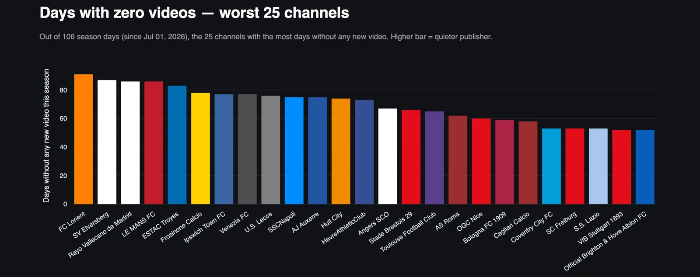
Lorient tops the list with about 90 of 106 days without a video, then Elversberg, Rayo Vallecano and Le Mans at around 86, Troyes at about 83, and a group between 73 and 78 that includes Frosinone, Ipswich, Venezia, Lecce, Napoli, Auxerre, Hull and Le Havre. Ligue 1 has nine channels in this list of 25, Serie A has eight, the Premier League four, the Bundesliga three and La Liga one, so the French and Italian long tails are the quietest in Europe, and Ipswich, Hull and Coventry publish like clubs that have not yet built a YouTube operation for this level.
Napoli at about 75 silent days and Roma at about 62 are the two names here that have no business on this chart, and Brighton at about 52 missed days has 19.6 million views and 123.6 thousand per video, so it is the one channel in the 25 that has an audience waiting and leaves it alone half the week. Every club on this list is below 10 million season views except Brighton, and the 20 biggest channels in the tracker are all absent from it, which is the whole relationship between consistency and reach in one chart.
11Every channel in the five leagues, ranked by season views
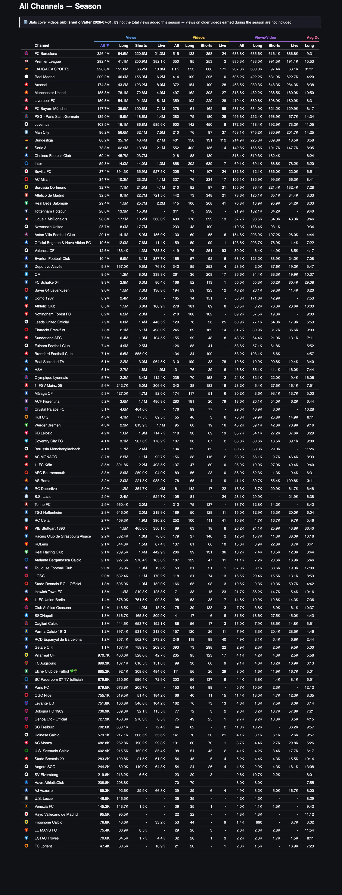
Barcelona is the biggest football channel in Europe this season, with 326.4 million views from 515 videos, ahead of the Premier League channel at 292.4 million, the LaLiga channel at 228.8 million, Real Madrid at 209.2 million and Arsenal at 174.3 million, and the top ten, which continues with Manchester United, Liverpool, Bayern, PSG and Juventus, holds 67% of all the views in the dashboard. The top 20 holds 87%, and the five league channels together hold 25%, 714.5 million views, with the Premier League and LaLiga channels alone taking 521.2 million of that.
The ranking by league says where the money is. Ten of the top 25 channels are English, six are Spanish, four are Italian, three are German and two are French, and the Italian four are Juventus in tenth, the Serie A channel in thirteenth, Inter in fifteenth and Milan in seventeenth, so the biggest Italian club channel sits behind Bayern, PSG and four English channels, and Manchester City, in eleventh with 96.2 million, has published 210 videos, 390 fewer than Juventus.
Per video the table has two kinds of outlier. The Premier League channel averages 991.5 thousand views per Short, the best Shorts average of any channel near the top of the table, and Barcelona averages 886.8 thousand per live stream from 24 of them, while Manchester City's 76 long-form videos average 745.2 thousand and Bayern's 61 average 654.0 thousand, the two best long-form averages among the big channels. Chelsea gets 519.3 thousand per long video and 182.4 thousand per Short, nearly three to one in favour of long-form, and Sevilla gets 336.0 thousand per Short and 12.1 thousand per long video, nearly 28 to one the other way, so the same format decision gives opposite answers at two clubs in the top 20.
The bottom of the table is eight channels under 200 thousand views for the whole season, Auxerre at 189.3 thousand, Lecce at 146.5 thousand, Venezia at 145.2 thousand, Rayo Vallecano at 95.5 thousand, Frosinone at 76.8 thousand, Le Mans at 75.4 thousand, Troyes at 70.6 thousand and Lorient at 47.4 thousand, and between them they have published 267 videos in 106 days, fewer than Liverpool, and 846.7 thousand views, which is less than a single Premier League channel Short earns on average. Rayo and Lecce have not published a Short in the window, and neither has Le Havre just above them, and every one of the eight is on the zero-days chart above.
The useful rows are in the middle. Como, with 14 long-form videos averaging 171.6 thousand against 42.9 thousand for its 151 Shorts, Tottenham, with 73 long-form videos averaging 182.1 thousand against 64.2 thousand for its 238 Shorts, and Everton, with 57 long-form videos at 121.2 thousand against 33.9 thousand for its 92 Shorts, are all clubs that have found a format with an audience and feed it lightly, and that is the cheapest growth on the page, because the audience is already there and the club is choosing to publish something else.
Where this leaves the five leagues
Football on YouTube in the five big leagues is twenty channels with 87% of the views and eighty-one channels sharing the rest, and the thing under all of it is audience, because the Premier League earns three and a half times per video what Serie A earns with the same number of uploads, Barcelona earns almost as much from 515 videos as the whole of the Bundesliga from 3,140, and length, cadence and format move a channel inside the band its supporters set, and the two distribution charts say how, with the Short under 13 seconds earning two and a half to three times the one clubs make most of, and the long-form clip under three minutes earning twice the five to ten minute recap that fills most catalogues.
If I ran a club in one of the three smaller leagues I would take the band as given and work the inside of it, with a daily rhythm first, because the 25 quietest channels in Europe are mostly French and Italian and each of them is silent on about half the days of the season or more, then a hard cut on Shorts length, then a decision to make long-form either a clip or a programme and nothing in between, and the Monday midnight rush left to the Spanish and French giants whose content it is. The engagement chart says the audience in Spain, France and Italy reacts more per view than the English one does, so the smaller leagues have a more committed fan in front of them and mostly leave that fan waiting.
The five league pages take each of these charts down to the club, and that is where the differences inside the band show, Como and Milan in Italy, Chelsea and Sevilla in England and Spain, Monaco in France and HSV in Germany, each of them sitting on a format that works and feeding it less than the one that does not.
YouTube Football Tracker
Use the tracker to learn from the rest of the league
Clubs and leagues can use it to benchmark their channel against every rival and borrow what is working elsewhere, across all five big leagues. Journalists can use it to find what is breaking out on football YouTube, which club is suddenly growing and which format is taking over, with the numbers to back the story. Everything in this piece is live at ytft.aguywithascarf.com, and if you want a custom view for the clubs or leagues you follow, message me on LinkedIn.
Explore the YouTube Football TrackerYou can find me on LinkedIn, read my LinkedIn newsletter or find me on Substack.
The other pages in this series
Sources
- YouTube Football Tracker, All five leagues season view 2026/27, data for videos published from 1 July 2026, snapshot of 15 October 2026 (A Guy With A Scarf, own data), https://ytft.aguywithascarf.com/
- A Guy With A Scarf, https://aguywithascarf.substack.com